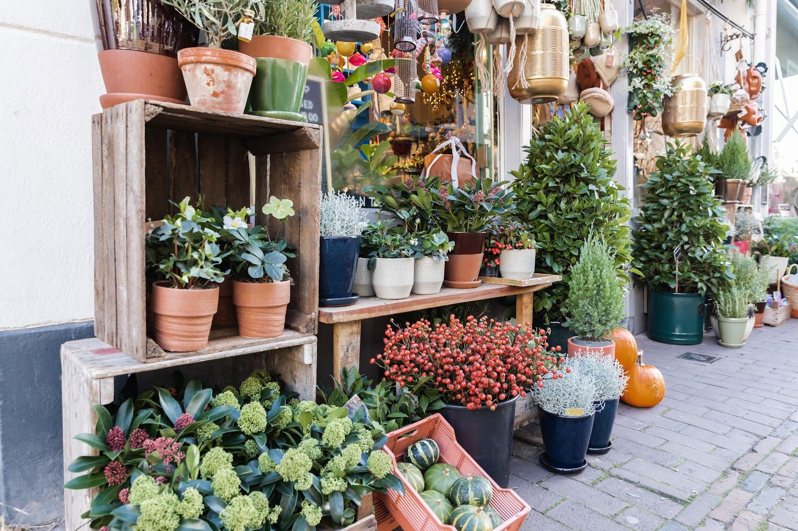
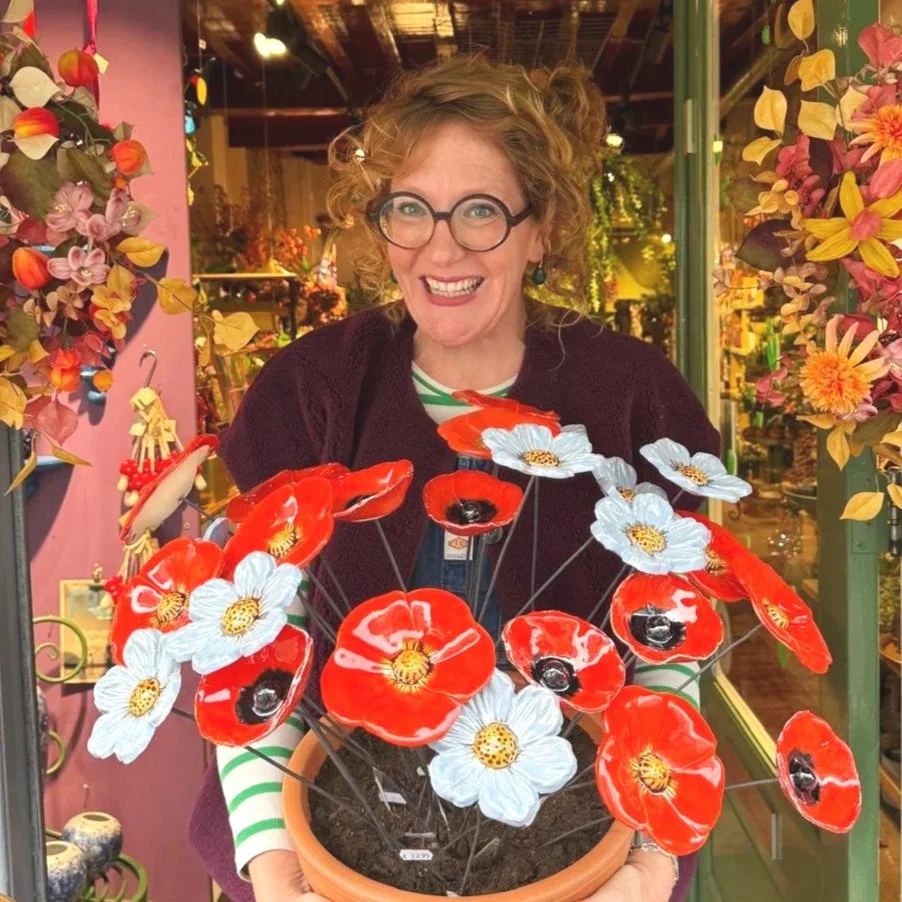
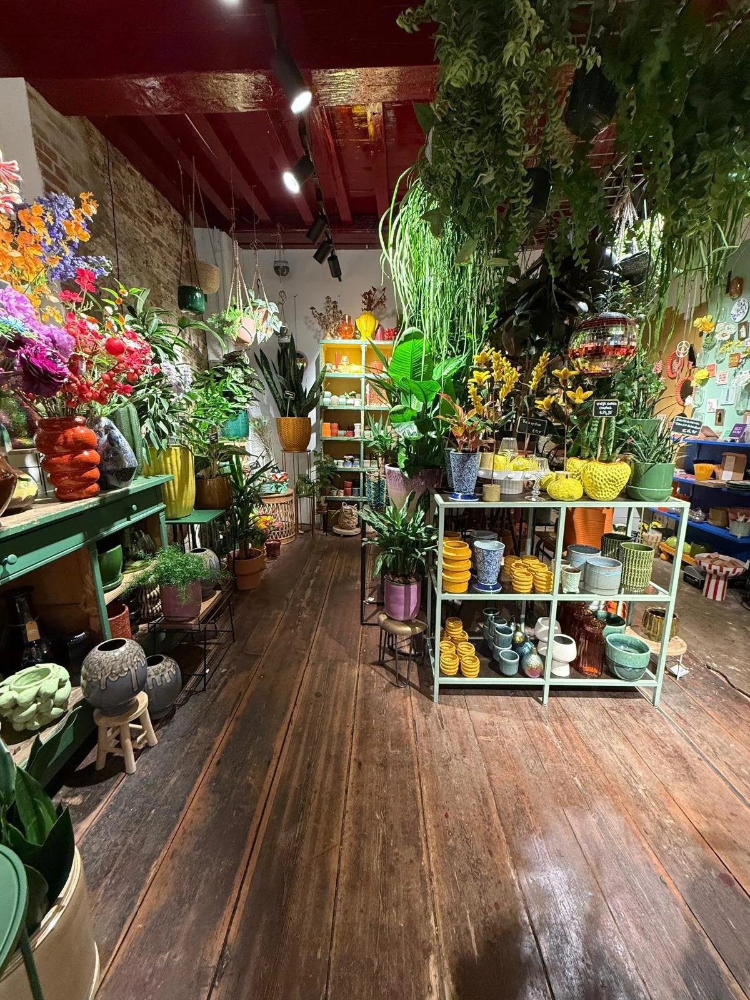
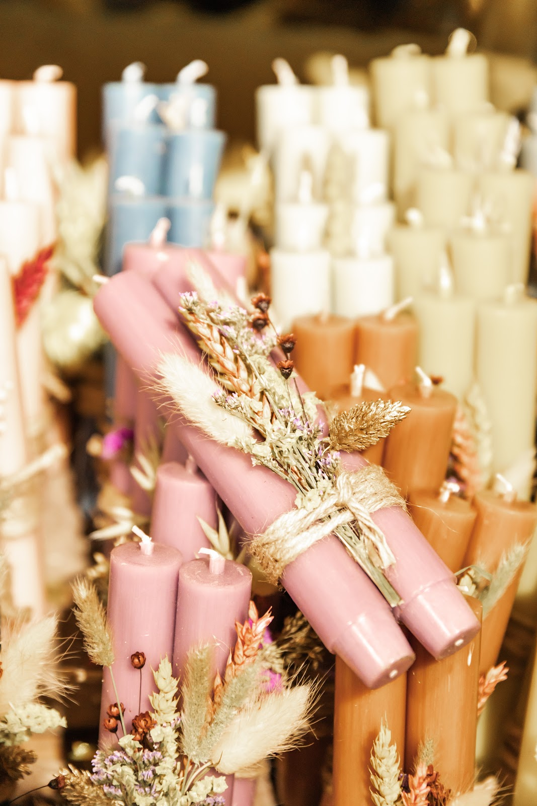
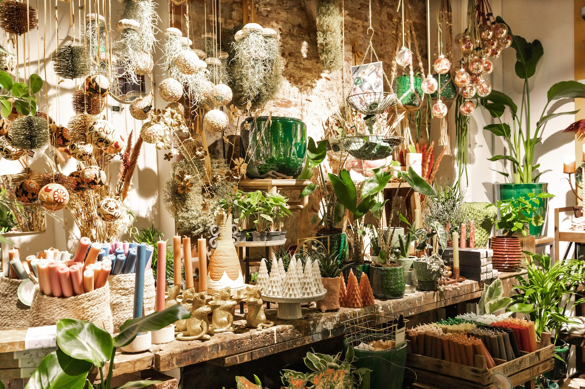
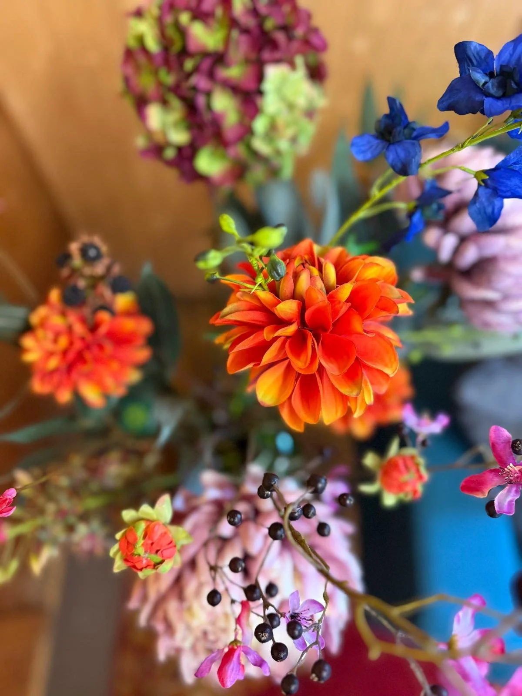
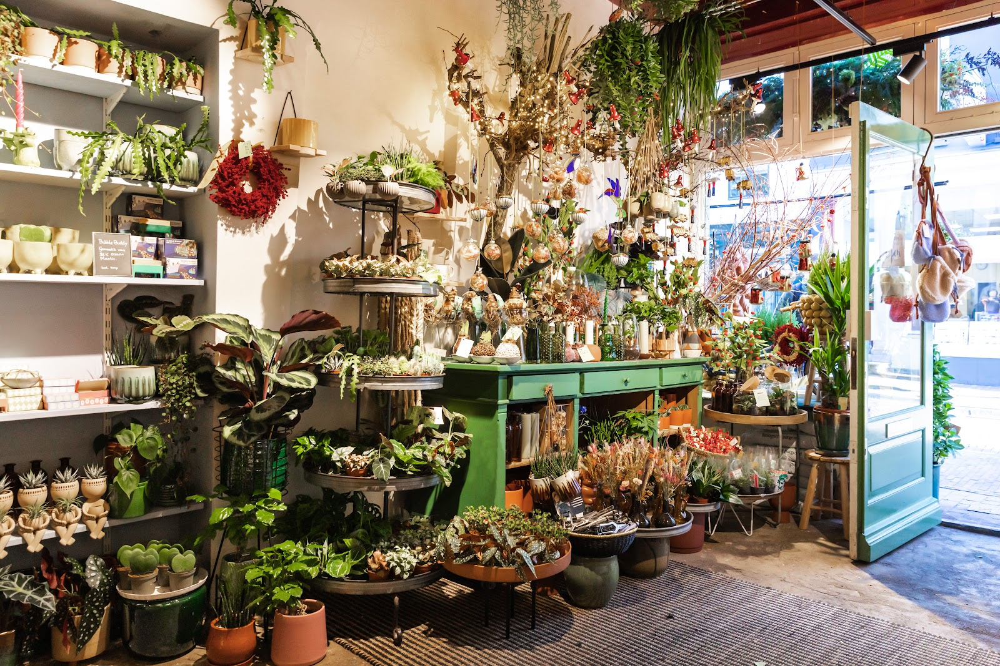
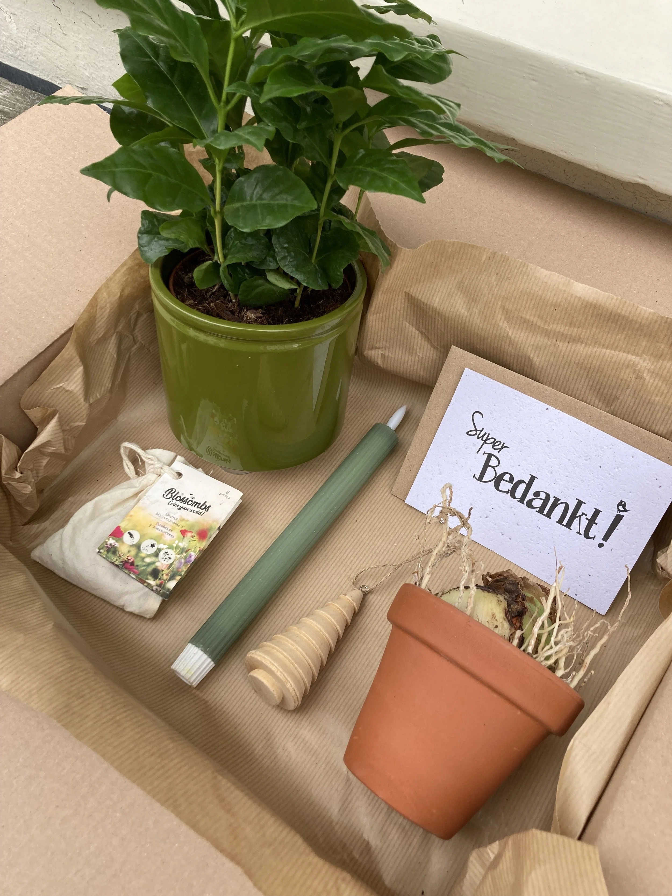
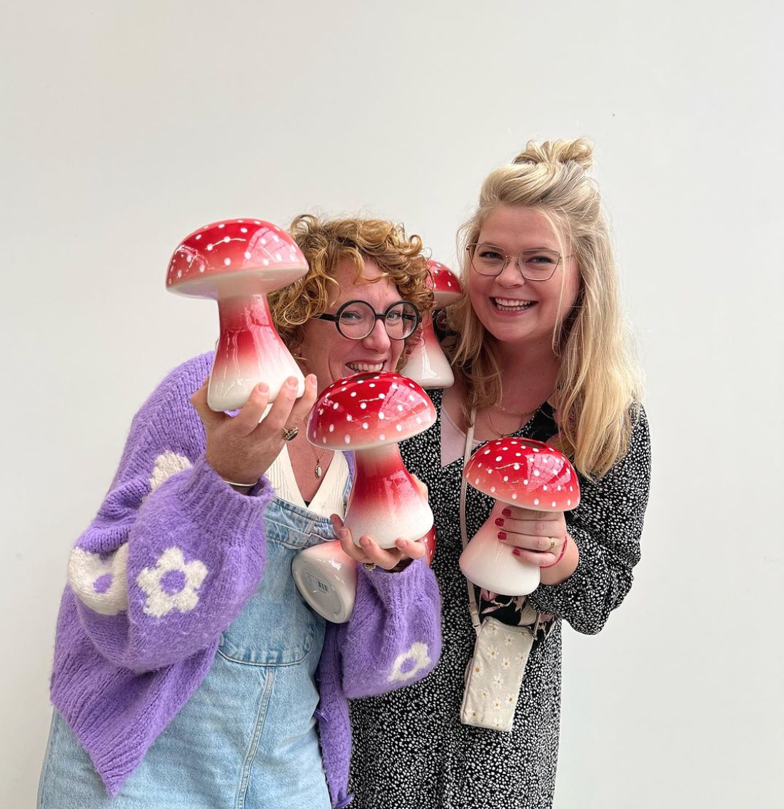
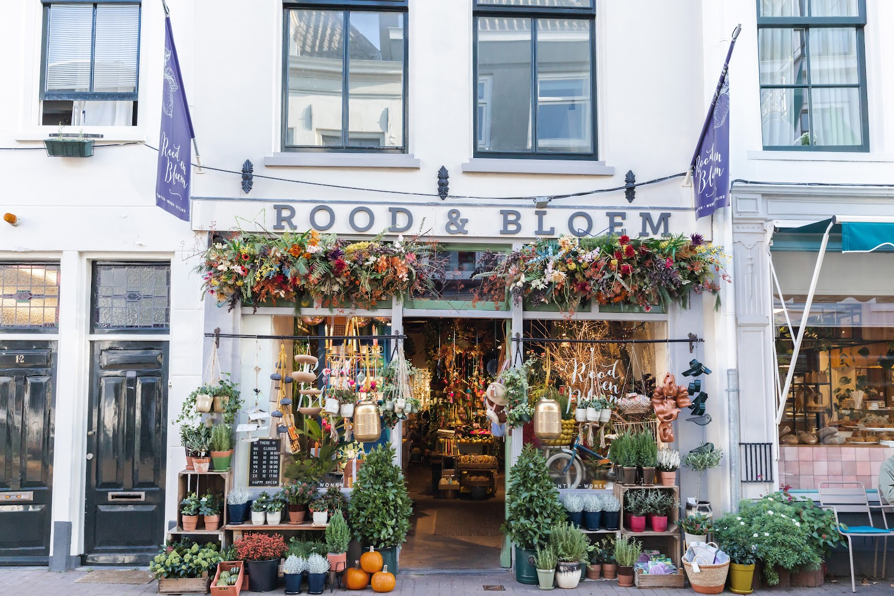

Groen
Bijzondere en groene planten, hippe groenblijvers en planten voor buiten. Iedere week wordt de winkel opnieuw gevuld met verse planten, dus er is altijd iets nieuws te ontdekken.
Stadstuinwinkel aan de Springweg, Utrecht
Een schatkamer vol kamerplanten, zijden bloemen, cadeaus en kaarten. Iedere week vers gevuld, in hartje Utrecht.
4.8 op Google, uit 149 reviews

Kom gerust langs
Springweg 14, Utrecht
Rood&Bloem is een stadstuinwinkel voor iedereen die van groen houdt. De schappen staan vol bijzondere planten, groenblijvers en planten voor buiten, en elke week komt er een verse lading binnen. Daartussen vind je zijden bloemen, potten, prints, kaarten en cadeaus voor jezelf of een ander.



Bijzondere en groene planten, hippe groenblijvers en planten voor buiten. Iedere week wordt de winkel opnieuw gevuld met verse planten, dus er is altijd iets nieuws te ontdekken.
Botanische prints, boeken en kaarten, woonaccessoires, potten, mokjes en nog veel meer. Leuke cadeaus voor jezelf of iemand anders, en de spullen wisselen wekelijks van plek.


Onze zijden bloemen zijn niet van echt te onderscheiden. Ze brengen kleur en sfeer in huis, en je hoeft ze nooit te vervangen. Ze komen van Silk-ka, een Nederlands merk dat bekendstaat om levensechte details en hoge kwaliteit.
Ze zijn zó echt dat je ze bijna ruikt. Kom ze in de winkel bekijken, voelen en combineren.
Wil je meer groen of kleur in je huis, winkel of kantoor, maar weet je niet welke planten het goed doen in de schaduw? Carolien maakt een persoonlijk styling- of groenplan, afgestemd op jouw ruimte, licht en stijl. Vaak maken een paar goed gekozen toevoegingen al het verschil.

Een plek waar je tot rust komt, of die je juist uitnodigt om prettig te werken. Carolien komt graag langs om van je huis een passend thuis te maken. Met een duidelijk uitgewerkt groenadvies maak je je huis eenvoudig groener.
Een winkel die de juiste sfeer ademt. Hoe gebruik je wat er al is, en wat voeg je toe? Carolien denkt mee over de winkelvloer, zodat jouw producten en collectie zo goed mogelijk naar voren komen.
Werkruimtes die bij je bedrijf passen, met een aangename werksfeer. Je krijgt stylingtips, een groenplan, of Rood&Bloem neemt de hele styling voor haar rekening.
Kunnen we je helpen met advies?
Stuur een mail met je vraag, het liefst met een foto van de ruimte erbij.
Mail je vraag en fotoOp zoek naar een origineel, mooi en duurzaam pakket voor een verjaardag, je moeder of je personeel? We stellen met liefde de mooiste combinaties samen en denken graag met je mee.
Of mail direct naar info@roodenbloem.nl


De naam verwijst, hoe kan het ook anders, naar de rode krullen van Carolien Rutgers. Haar liefde voor groen begon lang voor de botanische hype. Als kind betekende groen voor haar thuis en gezelligheid: in het weekend met haar moeder en oma verse bloemen uitzoeken, en een moestuin bijhouden was de gewoonste zaak van de wereld.
Inmiddels fietsen mensen ook van buiten Utrecht een eindje om, voor die ene bijzondere plant of dat leuke cadeautje.
"De geur van verse bloemen en planten werkt voor mij als een gelukselixer. Even diep ademhalen en ik bén er weer."
4.8 uit 149 Google-reviews
"Ik hou van deze winkel. Alleen maar fijn personeel dat behulpzaam. Mooie spullen die wekelijks van plek veranderen waardoor binnenkomen elke keer een verassing is. In de winkel ontsnap je even aan de werkelijkheid en worden kleine dromen realiteit."
"Wat een mooie en leuke winkel! Carolien heeft me fantastisch geholpen, ik ben super blij met mijn aankopen!! Hier ga ik nog vaak terugkomen :)"
"Echt ontzettend blij met deze prachtige pot, ontzettend uniek item!. De pot was in de winkel alleen in een kleine maat beschikbaar, waar de eigenaresse speciaal moeite heeft gedaan om deze pot voor mij in te kopen. Heel blij met mijn aankoop en zeker een aanrader deze winkel! ✨"
"Wat een superleuke winkel (!) Je kijkt je ogen uit, zeker nu de Kerst nadert. Carolien is een spontane gezellige ondernemer die van je aanschaf een feestje maakt."
"Hele mooie winkel en echt heel lief geholpen plus een hele mooie roosbottel “tak” gekocht. Aanrader!"

Je vindt ons in het centrum van Utrecht, op loopafstand van Utrecht CS. Kom op de fiets of parkeer in de Springweg parkeergarage, Strosteeg 83. Combineer je bezoek met een lunch op de gezellige Mariaplaats of een wandeling door de oude binnenstad.
030 662 8526
info@roodenbloem.nl
| maandag | gesloten |
| dinsdag | 10.00 - 17.30 |
| woensdag | 10.00 - 17.30 |
| donderdag | 10.00 - 17.30 |
| vrijdag | 10.00 - 17.30 |
| zaterdag | 10.00 - 17.00 |
| zondag | 12.00 - 17.00 |